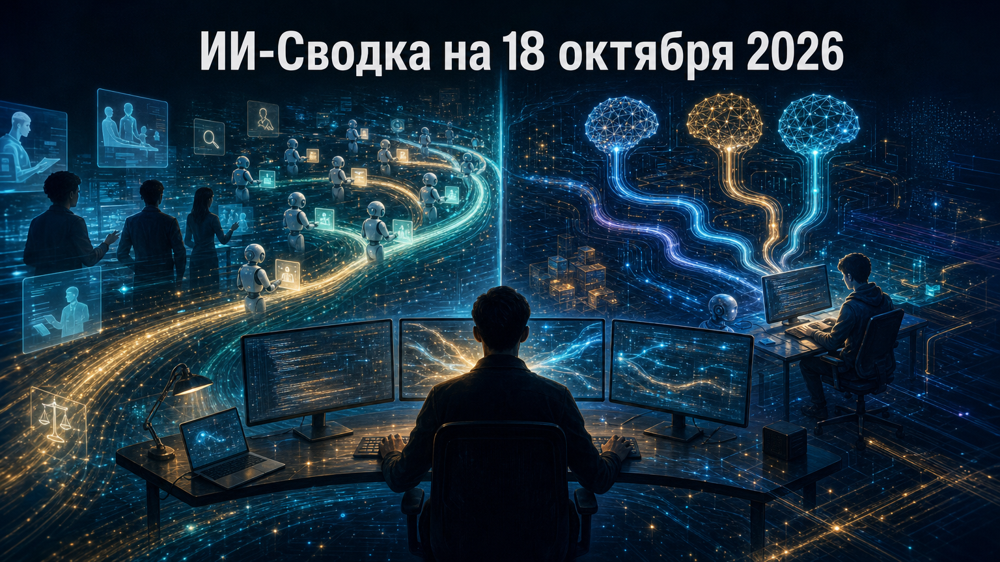

Новостей сегодня меньше, чем обычно
Сегодняшняя повестка концентрируется на двух практических последствиях агентного ИИ: он уже меняет организацию труда внутри разработчиков моделей и усиливает конкуренцию поставщиков моделей в инструментах для программирования. В обоих случаях важны не только возможности LLM, но и стоимость, управляемость и способность человека проверять результат.
Главный вывод дня: массовое внедрение агентов постепенно переносит конкуренцию с отдельных моделей на рабочие процессы, где решающими становятся качество исполнения, контроль и экономика использования.
Anthropic выпустила внутреннее исследование о влиянии Claude и интерактивных агентов на занятость и производственные процессы. Компания сообщает, что к августу 2026 года объём часов работы интерактивных агентов превысил человеческий в шесть раз. Одновременно доля junior-сотрудников в технических подразделениях, по её данным, сократилась с 21% в начале 2025 года до 14%.
Anthropic связывает изменения с ростом спроса на самостоятельность, профессиональное суждение и способность проверять результаты агентов. Это не универсальная картина для всего рынка труда: исследование основано на данных одной frontier-лаборатории и не доказывает причинность. Но оно показывает важную практическую проблему: при масштабировании агентов дефицитным ресурсом становится человеческое внимание, необходимое для постановки задач, контроля и принятия решений.
Глава Replit Амджад Масад сообщил, что OpenAI стала предпочтительным партнёром платформы, а модели ChatGPT используются по умолчанию в Replit Agent. Как пишет TechCrunch, решение компания объясняет сочетанием производительности, экономики и условий партнёрства.
Это не означает полного ухода Replit от Anthropic: компания уточнила, что Claude и другие поддерживаемые модели остаются доступными пользователям. Однако смена маршрута по умолчанию важна для рынка ИИ-кодинга: крупные платформы выбирают поставщиков не только по бенчмаркам, но и по цене, стабильности доступа, качеству агентного выполнения и коммерческой интеграции. Для разработчиков это усиливает ценность мульти-модельных сред, где критически важно сохранять возможность выбора и сравнения моделей.